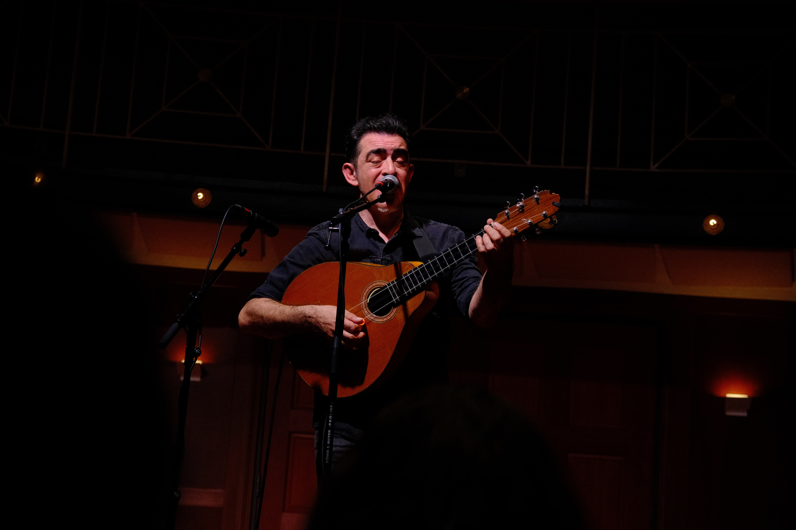
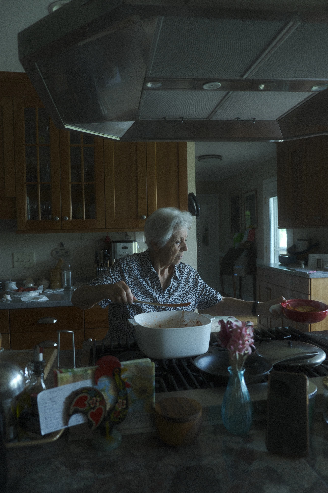
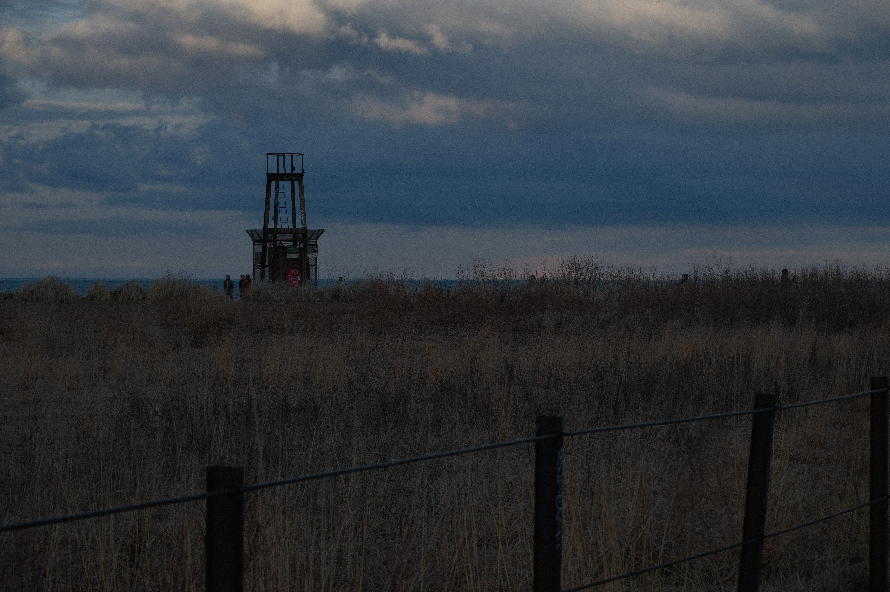

- 
- 
- 
tomas perry
freelance developer & photographer
About Me
I am a passionate freelance photographer and web developer with an eye for detail and a love for storytelling. My work focuses on capturing authentic moments and creating timeless images. I specialize in portraits, nature, and street photography, always striving to bring a unique perspective to every project.